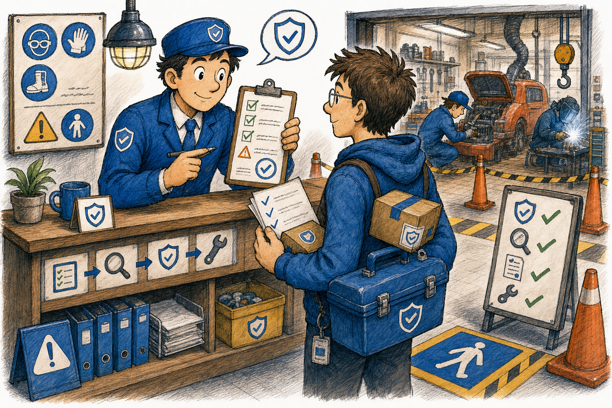
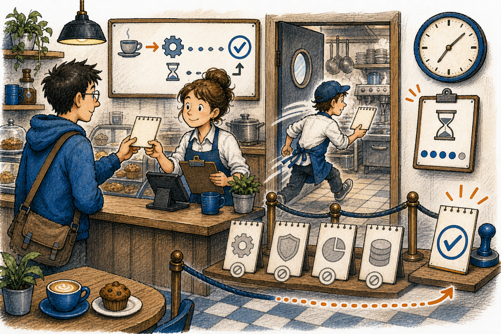
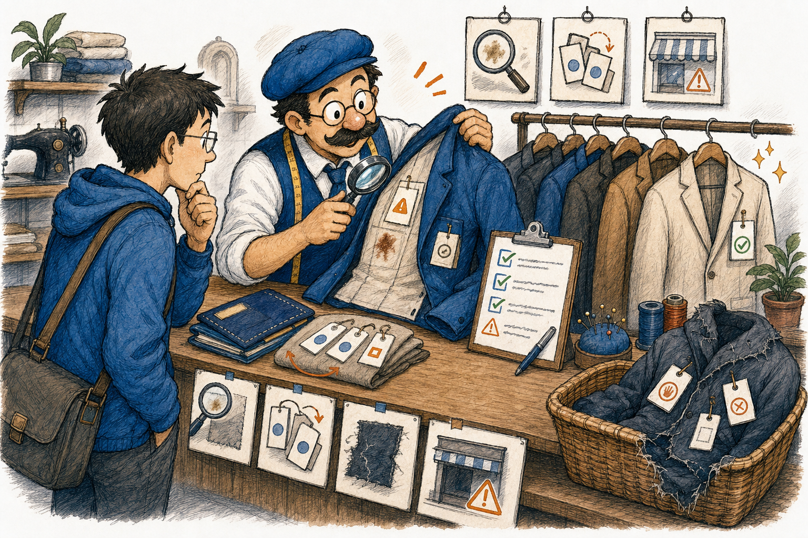
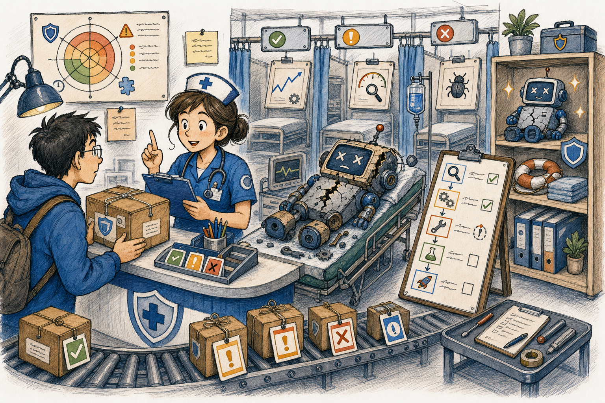
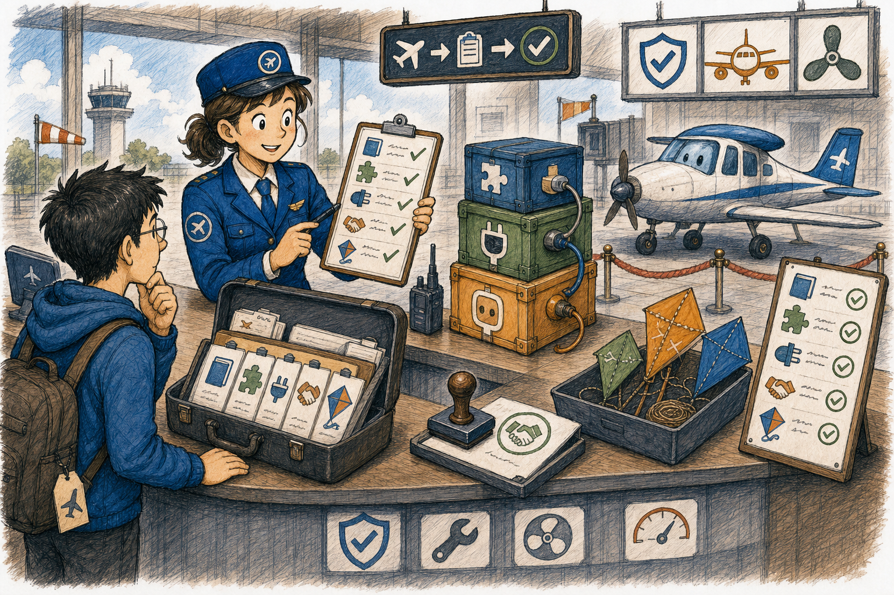
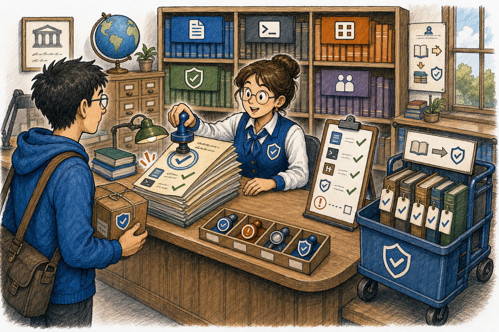

KANDA Reasoner Help
Audit Project > Engineering Safety
A local, evidence-backed safety desk for source hygiene, risk reports, governance drafts, symbol ownership, and safe command execution.

What Problem This Solves
Mode: Creation Pipeline. No Engineering Safety Markdown source, rendered HTML page, or manifest entry existed for this tab.
Technical: Engineering Safety is a child tab of the stable architecture_review Audit Project shell tab. Full Audit iterates the immutable catalog in order and marks interactive Ruff Corrections for manual review. Pontual Audit preserves the original command groups and output window. The authority boundary remains advisory.
In plain English: Think of it as a workshop safety desk. Before anyone drills, rewires, or ships a machine, the desk checks the tool list, labels the parts, looks at the risk cards, and hands back a written receipt. If the desk points at the wrong drawer or starts doing the repair itself, the rest of the workshop can damage the wrong part.
Further reading: Local code: reasoner_tools_gui_engineering_safety_panel.py, _reasoner_tools_gui_engineering_safety_panel_commands.py, and kanda_reasoner_app/safety_suite_cli/commands.py. External source categories: official Python docs for argparse, dataclasses, subprocess, concurrent.futures, and ast; Qt for Python docs for QTimer.
Layout Research Note
This page keeps the existing book-help CSS and uses sectioned tables plus short reading cards for the long command inventory. The adopted idea is table legibility and chunked reference flow from technical-book and documentation-design guidance, kept inside local CSS and the established KANDA help palette.
Full Audit And Pontual Audit
Full Audit is the left child tab. Complete Enginneering Review runs every safe catalog item in order and writes a discriminated text log. Cancel Review requests cooperative cancellation between catalog items, stops and hides sonar immediately, keeps the current command running until safe settlement, and records a cancelled summary. KANDA's canonical floating green sonar activity monitor keeps the same greenSonarActivityPanel object name and gradient background used elsewhere; Engineering Safety does not own a separate radar painter. Individual failures are preserved without stopping later checks. Interactive Ruff Corrections is reported as manual review and is never auto-applied.
Pontual Audit is the right child tab and preserves the original Engineering Safety tool groups and punctual result window. Both child tabs use the single Project Root selector in the shared Audit Project header; Engineering Safety does not duplicate the Project Root field or Browse button inside its body.
GUI Command Path

Technical: ENGINEERING_SAFETY_PANEL_CATALOG defines the panel actions as data: section, label, command name, and tooltip. create_engineering_safety_panel() imports PySide6 lazily, receives the shared Audit Project root through an explicit provider, groups buttons by section, and connects each button to run_command(). The command runner uses a single ThreadPoolExecutor(max_workers=1) plus QTimer.singleShot(150, ...) polling so the GUI event loop stays responsive. Full Audit stops and hides sonar immediately on cancellation while keeping cancellation requested distinct from worker settlement; controls re-enable only after the future completes.
In plain English: The panel is like a cafe counter. Every button writes one order ticket, the kitchen handles one order at a time, and the counter shows one receipt when the order is done. If two tickets are cooked in the same pan, or the server keeps the counter frozen while waiting, the customer cannot tell which receipt belongs to which order.
Further reading: reasoner_tools_gui_engineering_safety_panel.py; Qt for Python QTimer; Python concurrent.futures.ThreadPoolExecutor.
Source Hygiene

Technical: Source Hygiene commands inspect text encoding and public symbol ownership before source edits happen. bom-scan checks for UTF-8 BOM and decoding trouble. shadow-audit parses Python source with AST-based public-symbol checks. shadow-plan converts audit findings into a read-only correction plan. facade-fix-plan builds a safe facade cleanup plan without applying edits from the GUI. The invariant is source ownership clarity before a patch moves or exports code.
In plain English: Source Hygiene is a tailor checking clothes before alteration. The label says how to wash it, the seam shows where pieces join, and the repair card says what can be changed. If the tailor ignores the label or alters the wrong seam, the garment may still look familiar but no longer fits the person who needs it.
Further reading: bom_scanner.py, shadow_audit.py, shadow_planner.py, shadow_fixer.py; Python ast and text encoding docs.
Engineering Safety Reports

Technical: The Engineering Safety report family produces advisory reports. risk-radar estimates blast radius from changed files, validation output, and bundle manifest evidence. crash-triage extracts traceback frames and implicated files from crash evidence. refactor-playbook builds staged inspect/scope/extract/validate/rollback guidance. EngineeringSafetyReport and the report writer keep report type, risk, confidence, evidence, and output formatting consistent.
In plain English: This section works like a clinic. The radar is the quick checkup, crash triage reads the symptom chart, and the refactor playbook is the treatment plan. If the clinic writes the wrong patient name or skips the diagnosis, the next person may treat the wrong problem.
Further reading: risk_radar.py, crash_triage.py, refactor_playbook.py, schemas.py, report_writer.py; Python dataclasses docs and traceback text parsing references.
Governance, Stack, And Reliability Drafts

Technical: Governance, Stack, and Draft Reliability commands prepare evidence-backed drafts: release-notes from explicit bundle evidence, push-plan from default validation checks, stack-brief from dependency/runtime compatibility notes, api-contract from input/output guard needs, and property-test from invariant examples. Their invariant is traceability: every recommendation must point back to supplied evidence or an explicit code contract.
In plain English: This group is an airport preflight desk. Release notes are the manifest, push plan is the checklist, stack brief checks that the parts fit the plane, and reliability drafts mark which doors and gauges must be tested. If the preflight clerk stamps a plane without checking the parts, the flight may leave with a missing piece.
Further reading: governance_automation/, stack_compatibility/, reliability_guidance/; Python argparse docs and testing-reference categories.
Project Symbol Atlas
Technical: Project Symbol Atlas commands help find code ownership before edits. atlas-report builds a project report, evidence-freshness checks whether evidence still matches live source, find-symbol and find-owner locate known symbols and likely owner files, facade-owner distinguishes facade from owner, main-helpers maps public API ownership, related-files locates tests and support files, and pre-patch-gate checks ownership before patching.
In plain English: The Atlas is a city map office. Before you visit a building, the guide checks the address, the gate, the nearby files, and whether the printed map is still current. If the map is stale or the guide sends you to a storefront instead of the workshop behind it, your repair happens at the wrong place.
Further reading: project_symbol_atlas_commands.py and Project Analysis Evidence helpers; Python path handling and AST/source-scanning docs.
Operating Checklist

- Run
list-toolswhen you need to confirm the available CLI surface. - Run Source Hygiene before moving public symbols, facades, or generated text files.
- Run Risk Change Radar before broad edits and Crash Triage after a failure.
- Run Refactor Playbook before extracting or reshaping a module.
- Run Project Symbol Atlas before creating, moving, or patching symbols.
- Run Governance, Stack, and Reliability drafts only when you have concrete evidence to feed them.
- Treat every output as advisory evidence. Repair in the owning box, rerun the relevant check, then freeze only after independent validation is clean.
Authority Boundary
Authority boundary. Engineering Safety is advisory. It can run local safety commands, display command text, capture stdout/stderr, and help a human choose the next inspection. It must not patch source from the Help page, mutate prompt canons, approve AI routes, rewrite manifest data without an explicit edit request, or freeze project state.
Command Family Catalog
| Section | Command | Technical | In Plain English | Grounding |
|---|---|---|---|---|
| Source Hygiene | bom-scan | Scans project text files for UTF-8 BOM and decoding issues before source edits. | The tailor checks the wash label before altering the garment. | Local bom_scanner.py; Python text encoding docs. |
| Source Hygiene | shadow-audit | Audits public-symbol and facade conflicts using source parsing. | The tailor checks whether two garments share the same tag. | Local shadow_audit.py; Python ast docs. |
| Source Hygiene | shadow-plan | Turns shadow findings into a read-only correction plan. | The tailor writes the repair card before picking up scissors. | Local shadow_planner.py; Python data-structure docs. |
| Source Hygiene | facade-fix-plan | Builds a safe facade cleanup plan without applying GUI edits. | The tailor marks a seam plan without cutting cloth yet. | Local shadow_fixer.py; import/facade source behavior. |
| Engineering Safety | risk-radar | Scores changed files, validation output, and bundle evidence to estimate blast radius. | The clinic checks the vital signs before treatment. | Local risk_radar.py; Python dataclasses docs. |
| Engineering Safety | crash-triage | Extracts traceback/log clues and first files to inspect. | The clinic reads the chart before sending the patient to a specialist. | Local crash_triage.py; traceback parsing docs. |
| Engineering Safety | refactor-playbook | Produces staged inspect, scope, extract, validate, and rollback guidance. | The clinic writes a treatment plan before surgery. | Local refactor_playbook.py; testing and rollback design guidance. |
| Governance Automation | release-notes | Drafts release notes from explicit bundle evidence. | The airport manifest lists only cargo that is actually on the plane. | Local release notes generator; Python argparse docs. |
| Governance Automation | push-plan | Shows the default validation plan for a push. | The preflight clerk follows the checklist before takeoff. | Local push validator; command-parser docs. |
| Stack Compatibility | stack-brief | Drafts dependency and runtime compatibility notes. | The mechanic checks that every part fits the aircraft. | Local stack compatibility module; package/runtime docs. |
| Draft Reliability | api-contract | Drafts input/output guard recommendations for a function. | The counter marks what forms are accepted before the line opens. | Local API contract guidance; function/signature docs. |
| Draft Reliability | property-test | Drafts invariant-based test guidance. | The inspector tests that every package keeps its promised weight and seal. | Local property-test guidance; testing-reference categories. |
| Project Symbol Atlas | atlas-report | Builds a project symbol and ownership report. | The map office draws the city before giving directions. | Local Atlas commands; source-scanning docs. |
| Project Symbol Atlas | evidence-freshness | Checks whether saved analysis evidence still matches live source. | The guide checks whether the printed map still matches the streets. | Local evidence freshness command; file timestamp/path docs. |
| Project Symbol Atlas | find-symbol | Finds an existing symbol before new code is created. | The map office checks if the building already exists. | Local symbol lookup; Python AST/source docs. |
| Project Symbol Atlas | find-owner | Locates the likely owner file for a symbol. | The guide finds who owns the building before sending workers there. | Local owner lookup; path/source docs. |
| Project Symbol Atlas | facade-owner | Resolves whether a target file is a facade and identifies the owner. | The storefront may not be the workshop; the guide checks the back address. | Local facade owner logic; import/source docs. |
| Project Symbol Atlas | main-helpers | Maps main file, helper files, and public API owner. | The map links the front desk, storage room, and service door. | Local main/helper mapping; project structure docs. |
| Project Symbol Atlas | related-files | Finds tests, helpers, manifests, diagnostics, and support files. | The guide points to nearby shelves that must be checked with the main address. | Local related-file logic; path handling docs. |
| Project Symbol Atlas | pre-patch-gate | Runs ownership checks before editing source files. | The city gate checks the permit before work begins. | Local pre-patch gate; source ownership rules. |
| Utilities | list-tools | Lists available Safety Suite CLI commands. | The library clerk shows the catalog before checkout. | Local CLI facade; Python argparse docs. |
Further Reading Map
GUI registration: kanda_reasoner_app/reasoner_tools_gui_shell/tool_specs.py.
GUI panel and catalog: reasoner_tools_gui_engineering_safety_panel.py.
Private command runner: _reasoner_tools_gui_engineering_safety_panel_commands.py.
Safety Suite CLI facade: kanda_reasoner_app/safety_suite_cli/commands.py.
Backend boxes: source_hygiene/, engineering_safety/, governance_automation/, stack_compatibility/, reliability_guidance/, and Project Symbol Atlas integration.
Rich help system: help_docs/path_resolver.py, help_docs/renderer.py, and the desktop help document layout canon.
Validation Rule
The help document must remain local-only: Markdown source, deterministic HTML/CSS, original local PNG drawings, no remote resources in rendered files, and a desktop Qt renderer with safe fallbacks. Source and rendered files preserve the same section coverage, command families, artwork, authority boundary, and further-reading map.